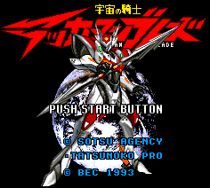

Tekkaman Blade - SNES Games

- Company: Bec
- Date Released: 1993
- Genre: Shooting game
Controls
- A button: Attack
- B button: [not used]
- X button: [not used]
- Y button: Throw Spear
- L button: [not used]
- R button: [not used]
- Start: Pause
- Select: [not used]
From Ignacio Tierno:
When you encounter another Tekkaman, you enter a "battle mode". At this time, you can perform a special
move by pressing A + X or B + Y.
Anime Video Game Resource Center © 1998 by Luis A. Cruz